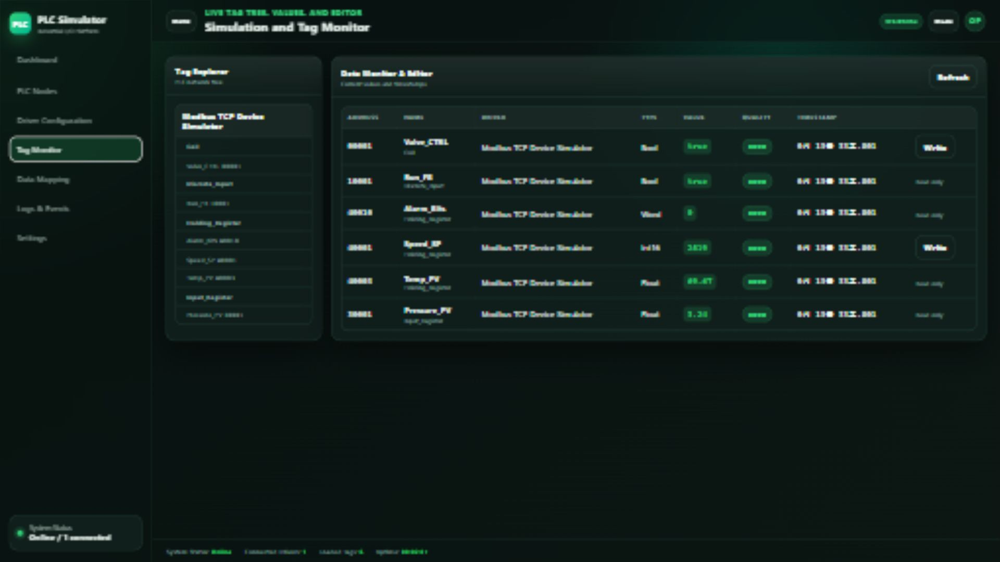

운영자가 사용하는 항목
Manage는 Driver Configuration으로, Open Logs는 전체 로그 화면으로 이동합니다. WS Online과 카드의 스위치 모양은 이 화면에서 상태를 읽기 위한 표시입니다.
DEVICE CONNECTIVITY · USER WALKTHROUGH
운영자는 제조사별 드라이버와 PLC 모델을 선택하고 접속 정보를 설정한 뒤, 실시간 태그를 읽거나 쓰고 상위 시스템용 표준 경로까지 관리할 수 있습니다. 아래 다섯 화면은 그 작업 순서를 실제 UI 기준으로 설명합니다.

OPERATIONS OVERVIEW
Dashboard는 시작 직후 시스템이 어떤 드라이버를 불러왔고, 무엇이 연결되어 있으며, 태그 통신이 정상인지 판단하는 운영 시작점입니다.
Manage는 Driver Configuration으로, Open Logs는 전체 로그 화면으로 이동합니다. WS Online과 카드의 스위치 모양은 이 화면에서 상태를 읽기 위한 표시입니다.
DRIVER CATALOG
PLC Nodes 화면은 플러그인 DLL에서 읽은 제조사, 프로토콜, 연결 주소와 태그 규모를 카드로 보여줍니다. 새 드라이버가 추가돼도 UI 구조는 그대로 유지됩니다.
각 카드의 상태 배지, Endpoint, Vendor, Tags와 활동 표시를 비교해 구성할 드라이버를 고릅니다. 활동 표시는 연결·태그 상태를 요약하며 실측 성능 지표가 아닙니다.
IPlcDriver 구현과 메타데이터를 찾습니다.MODEL + CONNECTION
운영자는 Protocol Profile, PLC Model, Communication Module을 선택해 기본값을 불러온 뒤 호스트·포트·Station 등 실제 접속값을 조정합니다.
프로토콜·모델·통신 모듈 드롭다운, Apply to Driver, DLL 업로드, 활성 스위치와 Endpoint·Listen Host·Port·Station 필드를 사용합니다.
LIVE READ + WRITE
Tag Monitor는 태그 주소, 데이터 형식, 현재 값, 품질과 갱신 시각을 보여주며 쓰기 가능한 태그에는 Write 동작을 제공합니다.
Tag Explorer에서 드라이버를 고르고 Refresh로 스냅샷을 요청합니다. R/W 태그의 Write 버튼을 눌러 새 값을 입력합니다.
Speed_SP 행의 Write를 누르고 1800을 입력합니다.SEMANTIC MAPPING
Data Mapping은 40001, D100처럼 프로토콜에 종속된 주소를 MES와 Gateway가 읽을 수 있는 표준 경로와 별칭으로 관리합니다.
Sync Tags, 검색창과 드라이버 필터로 대상을 찾고 Alias·표준 경로·활성 상태를 편집한 뒤 행별 Save 또는 Delete를 실행합니다.
NEXT PRODUCT
Channel → Device → Tag → Alarm → OPC UA Security 순서의 운영 화면을 이어서 확인하세요.